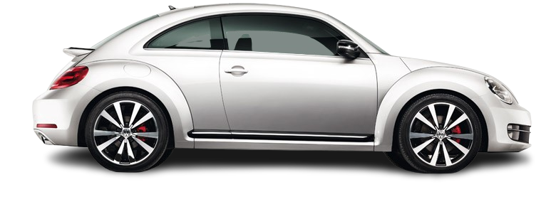
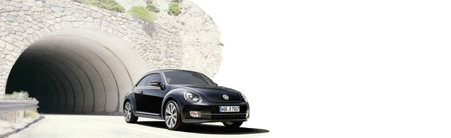

It's back.
Introducing the iconic Beetle, reborn for a new era! In a fusion of classic charm and modern innovation, Volkswagen proudly presents the all-new Beetle. Paying homage to its legendary predecessor, this reinvented classic captivates with its unmistakable silhouette, curvaceous lines, and friendly demeanor. Step inside, and you'll discover a blend of nostalgia and cutting-edge technology. The interior welcomes you with a spacious cabin adorned with retro-inspired touches, while advanced features promise a comfortable and connected ride. Under the hood, the Beetle boasts spirited performance, marrying efficiency with agility to deliver a driving experience that's both exhilarating and efficient. Whether navigating city streets or cruising along the open road, the Beetle promises a journey filled with joy and excitement. Embraced by enthusiasts and trendsetters alike, the Beetle transcends mere transportation to become a cultural icon. Its timeless appeal resonates across generations, making it more than just a car—it's a symbol of freedom, individuality, and endless possibilities. Join us as we embark on a journey into the future, with the spirit of the past guiding every mile. Welcome to the new Beetle—a modern classic for the ages.
Echoing the spirit of a bygone era, the new Beetle embodies the essence of retro-cool with a contemporary twist. Its iconic shape harks back to a time of flower power and free spirits, while its updated features and technology propel it firmly into the future. From its round headlights to its bubbly silhouette, every curve of the Beetle pays homage to its storied past. Yet, beneath its charming exterior lies a powerhouse of innovation, seamlessly blending vintage aesthetics with modern conveniences. Slide into the driver's seat and be transported to a time when the journey was as important as the destination. The Beetle's interior welcomes you with open arms, enveloping you in comfort and style reminiscent of days gone by. But don't let its retro facade fool you—the new Beetle packs a punch under the hood. With nimble handling and responsive performance, it's more than just a blast from the past; it's a thrill ride into the future. Join us on a trip down memory lane as we revive an automotive icon for a new generation. The new Beetle isn't just a car—it's a time machine, whisking you away to a simpler, more carefree time. Welcome back to the era of peace, love, and Beetles.